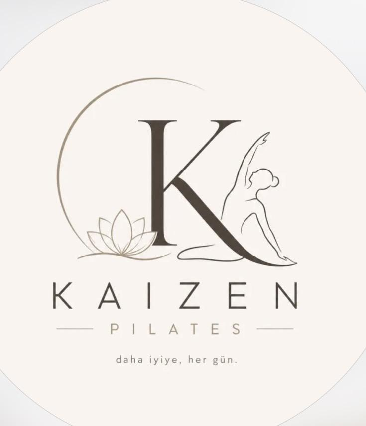
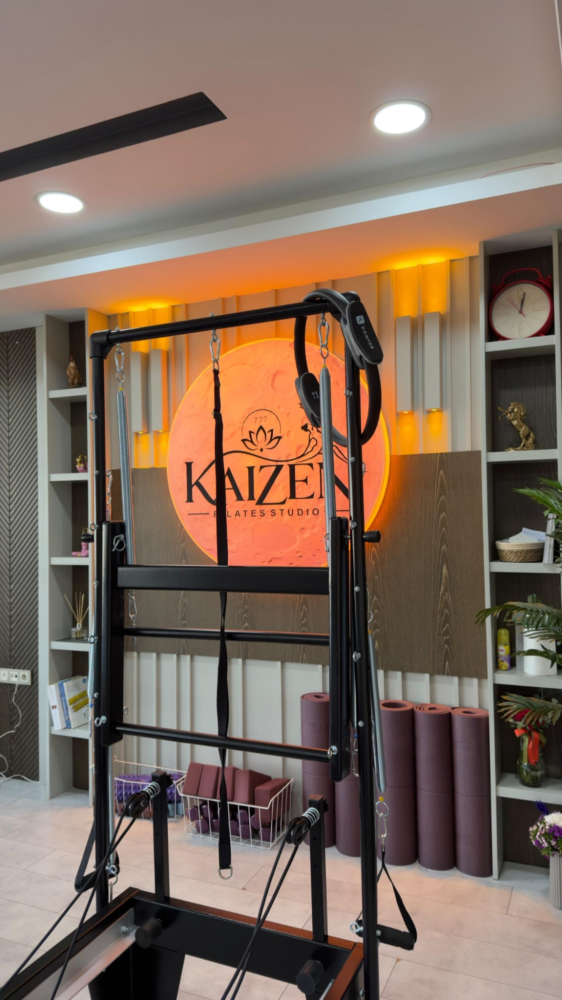

Güç ve denge
Merkez bölgeyi destekleyen kasların kontrollü çalışmasına yardımcı olur.

KAIZEN PILATESBeden • Zihin • Denge
Güçlü bir beden, dengeli bir zihin ve daha sağlıklı bir yaşam için size özel Pilates deneyimi.
Kaizen felsefesi
Kaizen Pilates Studio’da her bedenin, her hedefin ve her yolculuğun farklı olduğuna inanıyoruz.
Modern ekipmanlarımız ve kişiye özel yaklaşımımızla hareket kalitenizi geliştirmeyi, beden farkındalığınızı artırmayı ve kendinizi daha güçlü hissetmenizi destekliyoruz.
Amacımız yalnızca egzersiz yaptırmak değil; daha dengeli ve sürdürülebilir bir yaşam yolculuğunda size eşlik etmektir.

Sağlık ve yaşam kalitesi
Kontrollü hareket ve nefes odağıyla Pilates; güç, denge, esneklik ve beden farkındalığını destekler.
Merkez bölgeyi destekleyen kasların kontrollü çalışmasına yardımcı olur.
Günlük hareket alışkanlıklarınızı fark etmenizi destekler.
Daha rahat ve kontrollü hareket etmeye katkı sağlar.
Nefes ve hareket birlikteliği kendinize zaman ayırmanızı destekler.
Not: Pilates tıbbi teşhis veya tedavinin yerine geçmez. Sağlık durumunuz, ağrınız veya hamileliğiniz varsa başlamadan önce doktorunuza danışınız.
Hizmetlerimiz
Kontrollü direnç, güç, esneklik ve beden farkındalığı odaklı çalışmalar.
Sınırlı katılımcı sayısıyla yönlendirmeli ve motive edici dersler.
Doktor onayıyla, dönemin ihtiyaçlarına göre uyarlanan kontrollü hareketler.
Uzman değerlendirmesi doğrultusunda kişiselleştirilmiş egzersiz yaklaşımı.
Pilates ekipmanlarıyla kontrollü ve dengeli çalışma.
Kuvvet, mobilite, koordinasyon ve dayanıklılık odaklı çalışma.
Tamamen size özel
Hedefiniz, seviyeniz ve ihtiyaçlarınıza göre hazırlanan özel ders deneyimi.
Stüdyomuzu keşfedin
Modern ekipmanlar, özenli detaylar ve sıcak bir atmosfer.
Uzmanlık ve gelişim
Sürekli gelişim yaklaşımıyla tamamlanan eğitimler, seminerler ve uzmanlık çalışmaları.
Galeri
İlk adımı bugün atın
Dersler, seans saatleri ve size uygun program hakkında bilgi almak için bizimle iletişime geçin.
Telefon ve WhatsApp
+90 533 791 28 21
E-posta
kaizenpilates05@gmail.com
Instagram
@kaizenpilatesss
Adres
Talaytepe Mahallesi, 4003. Sokak
Positive Milidyum No:13 B, İç Kapı No:26
Kayapınar / Diyarbakır
Çalışma Saatleri
Pazartesi–Cumartesi: Randevu ile